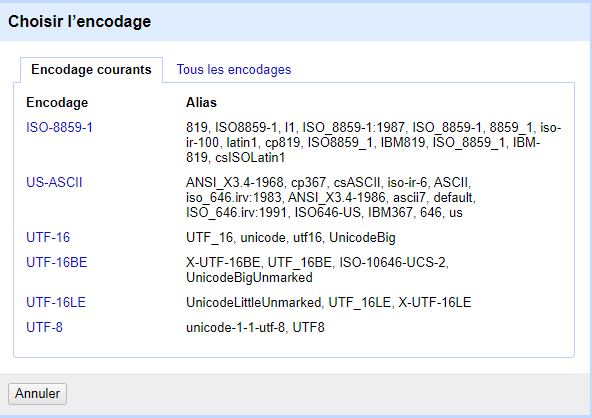

Moins le format du fichier est lourd, plus il sera simple pour OpenRefine et donc pour vous d’interagir avec les données choisies et de les traiter rapidement.
Dans mon cas, j’ai choisi d’utiliser ce set de données :
Pour commencer, sélectionnez votre fichier au format .csv et confirmez votre choix afin d’arriver sur la page suivante :
A première vue, on peut remarquer que la radio Chérie FM a été traduite en Chérie FM, ce qui posera problème lors de la réconciliation des données. Pour cela, commencez par cliquez dans le champ « format des caractères » et sélectionnez l’encodage UTF-8.

A priori, la case « une virgule (CSV) » est déjà coché et vous n’avez donc pas à changer cela. En revanche, dans le cas où vous avez un nombre trop important de lignes à votre goût, vous pouvez échantillonner votre set de données en indiquant le nombre de lignes maximum que vous voulez charger pour la suite de votre travail.
Dans mon cas, j’ai choisi de me limiter à 50 lignes.
Dans un contexte plus pratique, il est également conseillé de changer le nom de votre projet puisque dans la majorité des cas, il portera le nom de votre fichier .csv ce qui fera moins « brouillon » si vous lui donnez un nom plus parlant :
 Vous pouvez à présent créer votre projet et ainsi passer à l’étape suivante.
Vous pouvez à présent créer votre projet et ainsi passer à l’étape suivante.
Nous allons pour ce tutoriel nous servir de l’extension Wikidata, une base de connaissances libre éditée de manière collaborative et permettant la centralisation des données utilisées par différents projets Wikimedia.
Dans notre cas, voici à quoi ressemble les données en l’état et prêtes pour la réconciliation :
Nous allons donc nous intéresser à la colonne « channel_name » autrement dit les stations de radio et vous verrez par la suite pourquoi les autres colonnes ne nécessitent pas une réconciliation.
Cliquez alors sur la flèche de la colonne correspondante puis « démarrer la réconcilation » dans le menu déroulant.
Sélectionnez alors Wikidata.
A gauche, nous pouvons voir les différentes entités de Wikidata (avec chacune un identifiant bien précis) et à droite la possibilité d’utiliser nos données dans une volonté d’être plus précis. Dans cet exemple qui traite des stations radio, ce n’est pas la peine d’aller plus loin mais nous pouvons tout de même faire des tests entre « radio station » et « radio network ».
Démarrez ensuite la réconciliation.
L’encadré jaune indique la progression de la réconciliation. Dans certains cas, le temps d’attente peut s’avérer long suivant votre connexion et la taille du set de données.
Deux cas de figures que vous rencontrerez : soit la correspondance sera la bonne et vous serez satisfaits, soit vous devrez faire le choix entre un nombre varié de correspondances : c’est à vous de déterminer laquelle est la meilleure !
Pour revenir sur le moment où vous devez choisir les entités de Wikidata pour commencer une réconciliation, une fonctionnalité intéressante d’OpenRefine et que vous pouvez directement revenir en arrière et « en avant » de façon aisée :
Une fois ce travail qui peut s’avérer fastidieux effectué, vous pouvez exporter votre projet dans le format souhaité. Dans mon cas, j’utilise l’export en .xls
Vous avez terminé ! Vous pouvez ouvrir votre fichier dans un tableur et vérifier que vos nouvelles données disposent d’hyperliens :
Le but final de cette démarche est donc d’aligner des données à d’autres de bases de données comme Wikidata est d’apporter du coup de véritables précisions sur celles-ci !